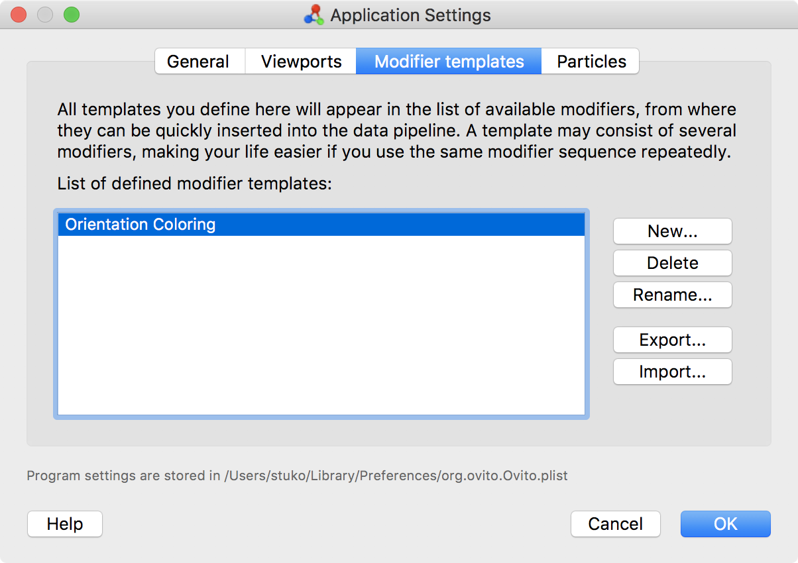
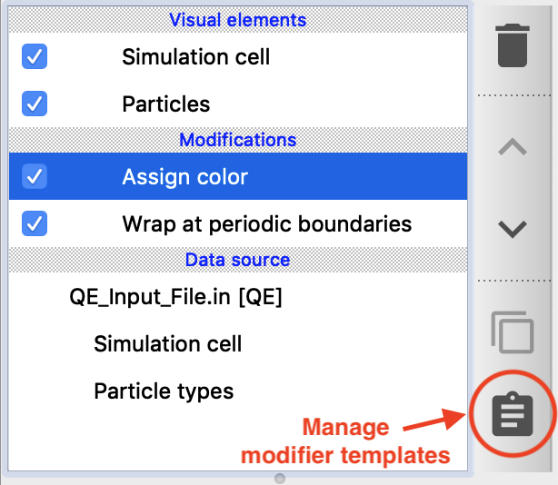

Modifier templates
{kind=link}
Modifier templates are a way for you to define modifiers with preconfigured settings for quick access. This is useful in situations where you need to apply the same modifier(s) with the exact same settings to different datasets repeatedly. The modifier templates you define are preserved across program sessions and can even be transferred between computers. Furthermore, a modifier template can consist of several modifiers, allowing you to insert often-used sequences or combinations of modifiers into the data pipeline with a single click.
Modifier templates are managed in the application settings dialog. Note that the pipeline editor contains a button to quickly open that dialog. All modifier templates you define are available application-wide, and OVITO will remember them across program sessions.
{kind=link}
New templates are defined based on existing modifiers in the active data pipeline. That means you basically “save” one or more modifiers, including their current settings, to make them available for future use. Once defined, modifier templates appear in the drop-down list of available modifiers behind the standard modifiers. From here, they can be quickly applied to new datasets. This feature is useful if you need to use the same modifier(s) with the exact same settings over and over again.
Another typical use case for modifier templates are user-defined script modifiers. The Python script modifier allows you to write a script function that performs user-defined data operations. After having developed a new script function, you can save it as a modifier template to make it available in future program sessions, just like the standard modifiers of OVITO. Since the script code will be part of the stored template, it relieves you from saving the script code to an external source file and again loading it into OVITO by hand.
Transferring templates to a different computer
Note that OVITO stores the definition of all modifier templates in the application’s settings file in a proprietary format. If needed, they can be exported to a special modifier template file in order to transfer them to another computer and import them into another OVITO installation.